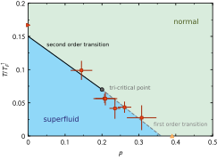
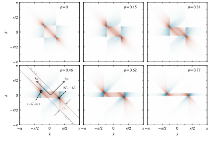
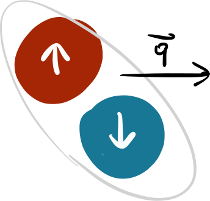
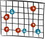
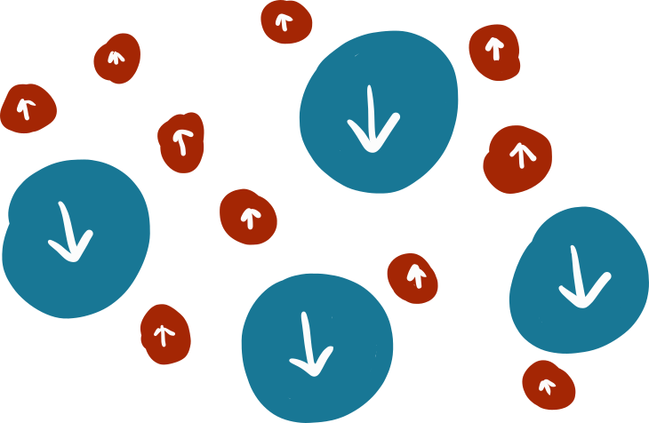
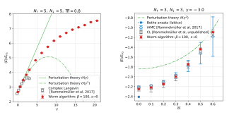

Approaching
imbalanced Fermi gases
via complex Langevin

$a_S \gg n^{-1/3} \gg r_0$
density & temperature are the only dimensionful
scales in the system
universal scaling functions:
$ P = P_{FG}\ f_P(\beta\mu) $
$\cdots$
numerous experiments:
- universal behavior & thermodynamics [Thomas,Kinast,Turpalov '05; Horikoshi et al. '10]
- temperature vs. polarization phase-diagram [Shin,Schunck,Schirotzek,Ketterle '08]
- measurement of equation of state [Nascimbène et al. '10; van Houcke et al. '12]
- superfluid transition [Ku,Sommer,Cheuck,Zwierlein '12]
- temperature dependence of Tan's contact [Carcy et al. '19; Mukherjee et al. '19]
- and many more...
quick intro to stochastic quantization & CL
(what is it & how can it help us for fermions?)
unitary fermions with finite polarization
(equations of state & thermodynamic response)
correlation functions & pairing at finite polarization
(one-dimensional systems)
$$\mathcal{Z} = \int{\!\mathcal{D}\phi\ e^{-S[\phi]}}$$
(partition function)
$$\langle \hat{\mathcal{O}}\rangle = \int{\!\mathcal{D}\phi\ \mathcal{O}[\phi]\,P[\phi]}$$
(expectation values)
$$P[\phi] = \frac{1}{\mathcal{Z}} e^{-S[\phi]}$$
(probability measure)
probability measure of a d-dimensional Euclidean path integral as
equilibrium distribution of a d+1-dimensional random process
random walk governed by
Langevin equation (Brownian motion):
$$\frac{\partial\phi}{\partial t_L} = -\frac{\delta S[\phi]}{\delta\phi}\,+\,\eta$$
noise term
$\langle \eta \rangle = 0$
$\langle\eta_t\eta_{t'}\rangle = 2\delta(t-t')$
(not physical)
$$\frac{\partial\phi}{\partial t_L} = -\frac{\delta S[\phi]}{\delta\phi}\,+\,\eta$$
$$ \phi^{(n+1)} = \phi^{(n)} - \frac{\delta S[\phi]}{\delta \phi}\bigg|_{\phi^{(n)}}\Delta t_{L} + \sqrt{2\Delta t_{L}}\tilde{\eta}$$
discretization
(Markov chain)
statistical evaluation
$$ \langle \hat{\mathcal{O}}\rangle = \frac{1}{N}\sum_{i=1}^N \mathcal{O}[\phi_i]$$
$ \sigma\ \propto\ \left(\sqrt{\text{# of (uncorrelated) samples}}\right)^{-1} $
help us to study fermions?
kinetic part
$$\hat H = -\sum_{s=\uparrow,\downarrow}{\int{\!d^dx\ {\hat{\psi}_{s}^{\dagger}(\vec x)}\left(\frac{\hbar^2\vec \nabla^2}{2 m_s}\right)\hat{\psi}_{s}(\vec x)}}$$
interaction part
$$+\ g\int{\!d^dx\ {\hat{\psi}_{\uparrow}^{\dagger}(\vec x)}\,\hat{\psi}_{\uparrow}(\vec x)\,{\hat{\psi}_{\downarrow}^{\dagger}(\vec x)}\,\hat{\psi}_{\downarrow}(\vec x)} $$
$$\mathcal{Z} = \text{Tr}[{\mathrm e^{-\beta\hat{H}}}] = \text{Tr}[{\mathrm e^{-\beta(\hat{T}\ +\ \hat{V})}}]$$
$$\langle \mathcal{O} \rangle = \frac{1}{\mathcal{Z}}\text{Tr}[{\hat{\mathcal{O}}\,\mathrm e^{-\beta\hat{H}}}]$$


+ Trotter decomposition
+ Hubbard-Stratonovich
transformation
$\mathcal{Z} = \int{\!\mathcal{D}\phi\ \det M_{\phi}^{\uparrow}\,\det M_{\phi}^{\downarrow}} \equiv \int{\!\mathcal{D}\phi\ \mathrm e^{-S[\phi]}}$
$ \phi^{(n+1)} = \phi^{(n)} + \Delta\phi^{(n)}$
$\Delta\phi^{(n)} = - \frac{\delta S[\phi]}{\delta \phi}\bigg|_{\phi^{(n)}}\Delta t_{L} + \sqrt{2\Delta t_{L}}\eta$
$\Delta\phi^{(n)}_R = - \text{Re}\left[\frac{\delta S[\phi]}{\delta \phi}\right]_{\phi^{(n)}}\Delta t_{L} + \sqrt{2\Delta t_{L}}\eta$
$\Delta\phi^{(n)}_I = - \text{Im}\left[\frac{\delta S[\phi]}{\delta \phi}\right]_{\phi^{(n)}}\Delta t_{L}$
complex action $\rightarrow$ complex Langevin equation
[Parisi '83;
Klauder '84;
Koonin,Adami '01;
Aarts '08;
LR,Porter,Drut,Braun '17;
LR,Loheac,Drut,Braun '18]
positive (semi-)definite if
any of these conditions applies:
$\mu_{\uparrow} \neq \mu_{\downarrow}$
$m_\uparrow \neq m_\downarrow$
$g > 0$
$$ \int\mathcal{D}\phi\ P[\phi]O[\phi] \to \int\mathcal{D}\phi_{\rm R}\mathcal{D}\phi_{\rm I}\ P[\phi_{\rm R}+{\rm i}\phi_{\rm I}]O[\phi_{\rm R}+{\rm i}\phi_{\rm I}] $$
guaranteed convergence if PDF decays
fast enough in imaginary direction and $S[\phi]$ is holomorphic
non-analyticities in the action
- zeros in measure ($\det M = 0$)
- could lead to ergodicity issues (bottlenecks)
non-vanishing boundary terms
- convergence to wrong limits possible
- behavior must be monitored
stochastic quantization & CL
SQ: interpret Euclidean field theories
as equilibrium limit of a ficticious random process
(allows us to build a Markov chain)
complex Langevin provides a way
to evade sign problems in some cases
however: not guaranteed to work a-priori
and the behavior needs to be monitored carefully
$$\mu = \frac{\mu_\uparrow + \mu_\downarrow}{2}$$ $$h = \frac{\mu_\uparrow - \mu_\downarrow}{2}$$
computationally challenging (but feasible)
$$p = \frac{n_\uparrow - n_\downarrow}{n_\uparrow + n_\downarrow}$$
$$\mu = \frac{\mu_\uparrow + \mu_\downarrow}{2} \qquad h = \frac{\mu_\uparrow - \mu_\downarrow}{2}$$


[zero-temperature $p_c$: Lobo,Recati,Giorgini,Stringari '06]
[balanced $T_c$: Ku,Sommer,Cheuck,Zwierlein '12]


CL results:
finite lattice $V = 11^3$

$\lambda_T$ increases
($\lambda_T \ll V^{1/3}$ must be fulfilled)
[DHMC: Drut,Lähde,Wlazlowski,Magierski '12] [diagMC: Rossi,Ohgoe,van Houcke,Werner '18]
dilute gases: few-body correlations dominate
idea: describe the system as expansion in few-body clusters
$$z = e^{\beta\mu}$$
$$\ln \mathcal{Z} = \mathcal{Q}_1\sum_{n}{z^nb_{n}}$$


VE approaches the CL results order-by-order
VE deviates earlier for polarized systems

$$m = n_\uparrow - n_\downarrow = \frac{\partial\ln\mathcal{Z}}{\partial (\beta h)}$$
$$p = \frac{n_\uparrow - n_\downarrow}{n_\uparrow + n_\downarrow} = \frac{m}{n}$$


$$n = \frac{\partial\ln\mathcal{Z}}{\partial (\beta \mu)}$$
$$m = \frac{\partial\ln\mathcal{Z}}{\partial (\beta h)}$$
pressure & energy
$ P(\beta \mu) = \frac{1}{\beta}\int_{-\infty}^{\beta\mu}{n(x)\ dx}$
$E = \frac{3}{2}PV$
thermodynamic response
$$\kappa = \frac{1}{n}\left(\frac{\partial n}{\partial P}\right)_{T,V,h}$$
$$\chi = \left(\frac{\partial m}{\partial h}\right)_{T,V,\mu}$$
$\left(\frac{\partial n }{\partial (\beta h)}\right)_{\beta\mu}$ $\overset{!}{=}\ $ $\left(\frac{\partial m }{\partial (\beta \mu)}\right)_{\beta h}$

$$\kappa = \frac{1}{n}\left(\frac{\partial n}{\partial P}\right)_{T,V,h} = \frac{1}{n^2}\left(\frac{\partial n}{\partial\mu}\right)_{T,V,h}$$


$T_C \sim 0.17 T_F$
sudden
increase of $\kappa$
indicates superfluid phase transition
features of curve
recovered with CL
quantitative disagreement
at low temperatures
[Luttinger-Ward: Enns,Haussmann '12]
[T-matrix: Pantel et al. '14]

weak dependence of the critical temperature on polarization indicated
challenging to extract precise $T_C$
$$\chi = \left(\frac{\partial m}{\partial h}\right)_{T,V,\mu}$$

Pauli susceptibility field independent at low field and temperature
UFG: dependence on $\beta h$ very similar to FG, but rescaled

high temperature: Curie's law $\chi \propto T^{-1}$
theory & experiment agree at high temperatures
Pseudogap:
suppression of $\chi$ at $T > T_C$
[recent review: Jensen et al. '18]
low temperature: discrepancy between experiment and theory
CL: pseudogap possible
$T^*$ and $T_C$ seem to be very close
recap: unitary fermions
EOS, magnetic properties & response accessible
for the unitary Fermi gas at finite temperature and polarization
CL matches state-of-the art results
from other methods and experiments
wherever available
exact solutions available
$=$
excellent benchmark systems
$\rho_{pair}(|x - x'|) = \langle \hat{\psi}_{\uparrow}^{\dagger}(x) \, \hat{\psi}_{\downarrow}^{\dagger}(x) \, \hat{\psi}_{\downarrow}(x') \, \hat{\psi}_{\uparrow}(x') \rangle$

$p = \frac{N_\uparrow-N_\downarrow}{N_\uparrow+N_\downarrow}$
~ likelihood
of a pair with
momentum $k$
spatially
fluctuating
order-
parameter
off-center peak: hallmark of FFLO type pairing
$\vec q\equiv \vec{k}_F^{\uparrow}-\vec{k}_F^{\downarrow} = 0$
$\vec{q} \neq 0$
$n_{\uparrow\downarrow}(k, k') = \langle \hat{\psi}_{k\uparrow}^{\dagger} \, \hat{\psi}_{k\uparrow} \hat{\psi}_{k'\downarrow}^{\dagger} \, \hat{\psi}_{k'\downarrow} \, \rangle - \langle \hat{\psi}_{k\uparrow}^{\dagger} \, \hat{\psi}_{k\uparrow} \rangle \langle \hat{\psi}_{k'\downarrow}^{\dagger} \, \hat{\psi}_{k'\downarrow} \, \rangle $

$p = \frac{N_\uparrow-N_\downarrow}{N_\uparrow+N_\downarrow}$
peak positions: $(\pm k_F^{\uparrow},\mp k_F^{\downarrow})$
positive correlations: particle-particle
negative correlations: particle-hole
resolution of internal structure of fermionic pairs
recap
complex Langevin is a valuable tool
to study ultracold Fermi gases
(it works quite well)
stay tuned!
looking for inhomogeneous phases in the UFG
thermodynamics of 2D fermions at finite polarization
[with Josh McKenney, Andrew Loheac & Joaquin Drut, UNC Chapel Hill]
vortex formation in 2D rotating bosons
[Casey Berger & Joaquin Drut, UNC Chapel Hill]
effect of mass-imbalance on fermion pair formation
the team
 Jens Braun
Jens Braun
 Florian Ehmann
Florian Ehmann
 Joaquin Drut
Joaquin Drut
 Andrew Loheac
Andrew Loheac
 Casey Berger
Casey Berger
TU Darmstadt
UNC Chapel Hill
appendix
$\phi^{(n+1)} = \phi^{(n)} - \frac{\delta S[\phi}{\delta\phi}\bigg|_{\phi^{(n)}}\Delta t_L$ $- 2\xi\phi^{(n)}$ $ + \sqrt{2\Delta t_L}\eta$

unregulated runs tend to fail: $\xi$ stabilizes CL trajectories
similar approach in QCD: "dynamic stabilization" [Attanasio,Jäger '18]
$P(\beta \mu) = \frac{1}{\beta}\int_{-\infty}^{\beta\mu}{n(x)\ dx}$


[experiment: Ku,Sommer,Cheuck,Zwierlein '12; Nascimbène et al. '10]
[DHMC: Drut, Lähde, Wlazlowski, Magierski '12]


repulsive side:
outliers skew
expectation values!
('fat tail' problem)
attractive side:
no outliers,
no problems!

[DFT-RG: Kemler, Pospiech, Braun '17; Kemler '17]
[HMC: LR, Porter, Loheac, Drut '15]
$\bar{m} = \frac{m_{\uparrow} - m_{\downarrow}}{m_{\uparrow} + m_{\downarrow}}$

discrepancy with worldline methods for repulsive interaction
excellent agreement regardless of mass imbalance for attractive systems

$p = \frac{N_\uparrow-N_\downarrow}{N_\uparrow+N_\downarrow}$